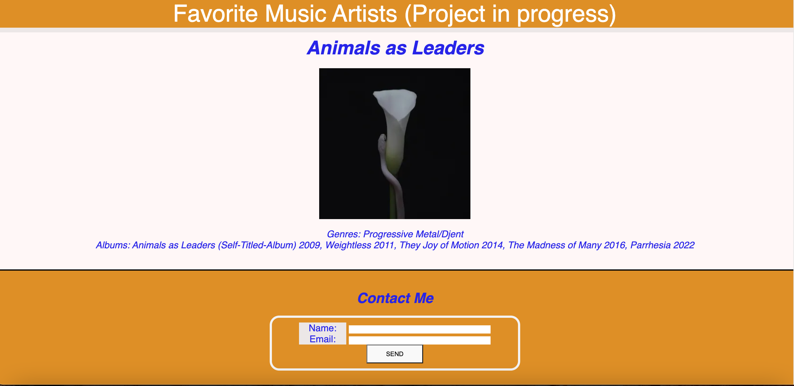
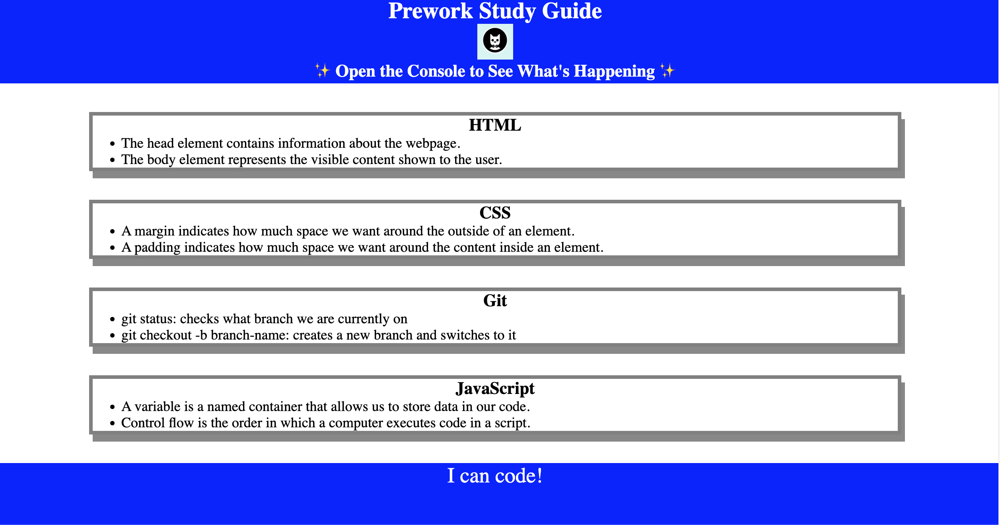

Syntax Semantixs Portfolio
About Me
Work
Contact Me
Resume
Work
Favorite Music Artists

Horiseon
Prework Study Guide

Contact Me
GitHub: syntaxtsemantixs
Email: gormeno2030@gmail.com
Twitter: avog20101930